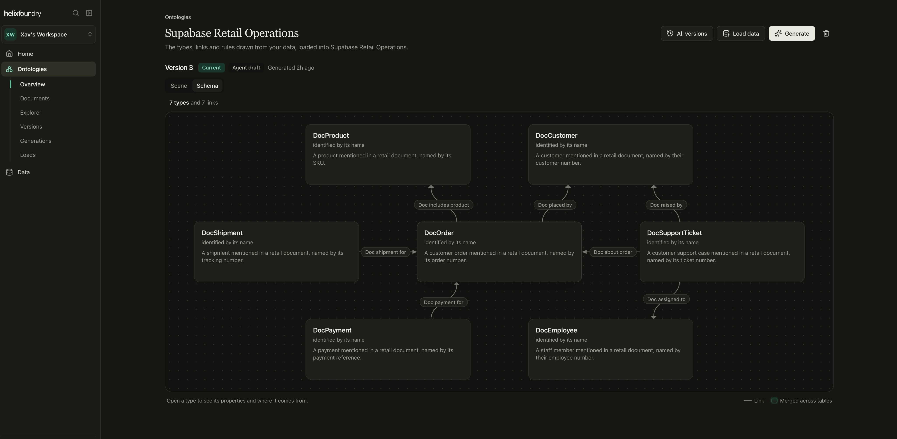
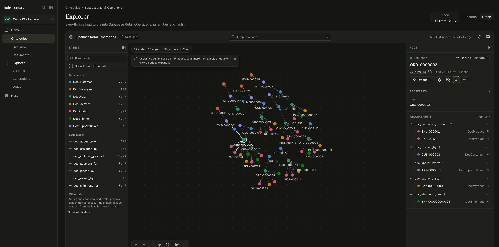

Your data, drawn as types and links
Load a database and Foundry generates the ontology: typed entities, the links between them, and every version kept.
$ git clone github.com/helixdb/helix-foundry.git
$ cd helix-foundry && ./scripts/setup.sh --compose
Built on HelixDB / DuckDB / Parquet / Ollama
Schema
Seven types and seven links, drawn from your data.
Foundry reads what you loaded and proposes the types, the links and the rules. Version 3 sits as an agent draft until you make it current.

Explorer
Walk what a load wrote, node by node.
Open a record and see its properties and every relationship, in and out, with the load and the version that wrote it.

Fig. 1
01Ontology
Many rows in, one typed entity out.
- 1.1Entities merged across tables
- 1.2Links stored natively in HelixDB
- 1.3Every generation kept as a version
Fig. 2
02Isolation
Queries run with no internet and no credentials.
- 2.1No internet, no connector keys
- 2.2512 MB a job, two jobs at once
- 2.3Nothing written back to your sources
The point
Nobody has to agree on a schema first.
Load the data. Foundry proposes the types and the links, and you keep or change them before anything becomes current.
Fig. 3
Ask in English, read back the SQL.
Foundry writes the SQL, runs it, checks the result, then writes the sentence. The snapshot versions it cites are immutable, so the same question returns the same number next month.
Which accounts have an open support ticket and renew in the next 30 days?
Nine accounts, holding $14,200 of monthly recurring revenue.
SELECT a.name, count(t.ticket_id), s.current_period_end FROM accounts a JOIN subscriptions s ON s.account_id = a.account_id LEFT JOIN support_tickets t ON t.account_ref = a.name
accounts v14, subscriptions v9, support_tickets v3
Fig. 4
Measured on one laptop.
Every figure below was measured on one M1 Pro laptop with 16 GB of RAM. Run BENCH_HTTP=1 pnpm benchmark to produce them yourself.
git clone https://github.com/helixdb/helix-foundry.git cd helix-foundry ./scripts/setup.sh --compose
Thirteen ways to load data.
Postgres and MySQL keep up through native change capture. Everything else refreshes on a schedule you set.
PostgreSQL / MySQL / Neo4j / Neon / Supabase / PlanetScale / Stripe / WorkOS / PostHog / REST / S3 / CSV and Parquet / Ingestion API
Helix Foundry is now hosted too. Helix Cloud runs it for you: load your data, generate an ontology, and walk it without running HelixDB, DuckDB and Ollama yourself.
Self-hosted Foundry listens on 127.0.0.1 only and has no sign-in: anyone on that machine is already in.